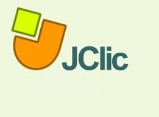

Construir un ambiente virtual de aprendizaje (AVA) que permita formular proyectos de investigación y/o trabajos de grado siguiendo las diferentes líneas de investigación de la Facultad de Ingeniería de Unipanamericana.
Exelearning: Es un programa que facilita la creación de contenidos educativos, permite crear actividades interactivas e información textual. Es compatible con Moodle y otros LMS. [1]
Cuadernia: Se trata de una herramienta fácil y funcional que nos permite crear de forma dinámica libros digitales en forma de cuadernos compuestos por contenidos multimedia y actividades educativas para aprender jugando de forma muy visual. [2]
Jclic: Consta de un conjunto de aplicaciones informáticas que sirven para realizar actividades educativas: rompecabezas, ejercicios de texto, crucigramas, etc. [3] 
Educaplay:Es un aplicativo para poder crear activiades, presentaciones o distintas herramientas que sirven en el ambito educativo, compatible con moodle o sistemas que permitan el formato LMS para compartir la actividad, existen gran variedad de actividades que se pueden hacer para construir la clase mucho mas interactiva. [4]